Code
library(here)
library(tidyverse)
library(phyloseq)
library(rstatix)
library(microViz)
library(ggpubr)
library(ggbeeswarm)
library(ggside)
library(vegan)
library(reshape2)
library(pander)Research Project A - Does yogurt consumption change the vaginal microbiome?
Aim To investigate whether the consumption of yogurt influences microbiome composition after antibiotics treatment.
Study Description This is a randomized controlled trial to study whether yogurt consumption has an effect on the vaginal microbiome post antibiotic treatment. 16S rRNA gene sequencing was done to characterize patient microbiome composition. Absolute abundance of bacteria (in gene copies / mL) was measured by 3 qPCR assays (for total, L. crispatus, L. iners). Cytokine levels (in ug/mL of vaginal fluid) were also measured by Luminex. Data was collected at two timepoints, pre- and post antibiotic treatment.
library(here)
library(tidyverse)
library(phyloseq)
library(rstatix)
library(microViz)
library(ggpubr)
library(ggbeeswarm)
library(ggside)
library(vegan)
library(reshape2)
library(pander)Show path to the current project
here::here()Create object containing the path to the data we intend to analyze
yo_path <- file.path(here("data/"))
yo_pathList the files we intend to load
list.files(yo_path)Load the sample-associated data
sample_ids <- read.csv(paste0(yo_path, "00_sample_ids_yogurt.csv"))
participant_metadata <- read.csv(paste0(yo_path, "01_participant_metadata_yogurt.csv"))
qpcr <- read.csv(paste0(yo_path, "02_qpcr_results_yogurt.csv"))
luminex <- read.csv(paste0(yo_path, "03_luminex_results_yogurt.csv"))
amplicon_ids <- read.csv(paste0(yo_path, "04_yogurt_amplicon_sample_ids.csv"))Load the count table and taxonomy table. These are the outputs of dada2.
all_samples_count_table <- readRDS(paste0(yo_path, "gv_seqtab_nobim.rds"))
all_samples_tax_table <- readRDS(paste0(yo_path, "gv_spetab_nobim_silva.rds"))Prepare the sample-associated data by joining (adding) the sample ids, participant metadata, qpcr data, and luminex data to the amplicon ids. Adjust the factor levels for several variables.
yogurt_sample_data <- amplicon_ids %>%
left_join(sample_ids %>% select(-arm), by = c("pid", "time_point")) %>% # joins sample ids
left_join(participant_metadata %>% select(-arm), by = "pid") %>% # joins participant metadata
left_join(qpcr, by = "sample_id") %>% # joins qpcr data
left_join(luminex %>% # pivots wider then joins the luminex data
pivot_wider(names_from = cytokine,
values_from = c(conc,limits)), by = "sample_id") %>%
mutate(time_point = fct_relevel(time_point, "baseline", "after_antibiotic")) %>%
mutate(arm_timepoint = str_c(arm, time_point, sep = "_")) %>%
mutate(arm_timepoint = fct_relevel(arm_timepoint,
"unchanged_diet_baseline",
"unchanged_diet_after_antibiotic",
"yogurt_baseline",
"yogurt_after_antibiotic"))# What are the variables?
colnames(yogurt_sample_data) [1] "amplicon_sample_id" "amplicon_type" "pid"
[4] "arm" "time_point" "sample_id"
[7] "days_since_last_sex" "birth_control" "age"
[10] "education" "sex" "qpcr_bacteria"
[13] "qpcr_crispatus" "qpcr_iners" "conc_IL-1a"
[16] "conc_IL-10" "conc_IL-1b" "conc_IL-8"
[19] "conc_IL-6" "conc_TNFa" "conc_IP-10"
[22] "conc_MIG" "conc_IFN-Y" "conc_MIP-3a"
[25] "limits_IL-1a" "limits_IL-10" "limits_IL-1b"
[28] "limits_IL-8" "limits_IL-6" "limits_TNFa"
[31] "limits_IP-10" "limits_MIG" "limits_IFN-Y"
[34] "limits_MIP-3a" "arm_timepoint" # Any missing data?
sum(is.na(yogurt_sample_data))[1] 0# All IDs unique?
length(unique(yogurt_sample_data$amplicon_sample_id)) == nrow(yogurt_sample_data)[1] TRUE# Any incomplete cases?
yogurt_sample_data %>%
count(pid) %>% filter(n != 2)[1] pid n
<0 rows> (or 0-length row.names)yogurt_sample_data %>%
ggplot(aes(x = time_point, y = pid, color = age, shape = sex)) +
geom_point(size = 3, stroke = FALSE) +
facet_wrap(~arm, scales = "free_y") +
labs(title = "VMB before & after ABX")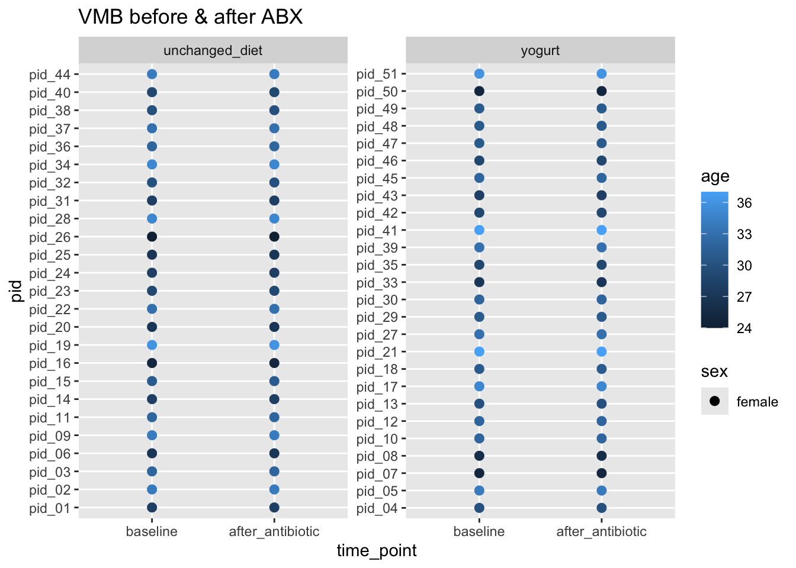
yogurt_ps <- phyloseq(
# Make the phyloseq object
sample_data(yogurt_sample_data %>% column_to_rownames(var = "amplicon_sample_id")),
otu_table(all_samples_count_table, taxa_are_rows = FALSE),
tax_table(all_samples_tax_table)) %>%
# Remove empty ASVs
filter_taxa(., function(x) sum(x > 0) > 0, prune = TRUE)
# Show a concise summary of the phyloseq object
yogurt_psphyloseq-class experiment-level object
otu_table() OTU Table: [ 1588 taxa and 102 samples ]
sample_data() Sample Data: [ 102 samples by 34 sample variables ]
tax_table() Taxonomy Table: [ 1588 taxa by 7 taxonomic ranks ]min(sample_sums(yogurt_ps))[1] 19min(taxa_sums(yogurt_ps))[1] 1Do we have any samples that returned very few reads?
yield_df <- data.frame(yield = sample_sums(yogurt_ps)) %>%
rownames_to_column(var = "amplicon_sample_id") %>%
arrange(yield)
head(yield_df, n = 3) %>% pander()| amplicon_sample_id | yield |
|---|---|
| VAG0191 | 19 |
| VAG0405 | 35 |
| VAG0208 | 7712 |
Yes, two samples returned very few reads.
Do we see any arm- or time-point-associated bias in sequencing yield?
yogurt_sample_data %>%
left_join(yield_df, by = "amplicon_sample_id") %>%
mutate(lo_yield = yield < 100) %>%
ggplot(aes(x = yield, fill = lo_yield)) +
geom_histogram(alpha = 0.6, bins = 10) +
facet_grid(arm ~ time_point)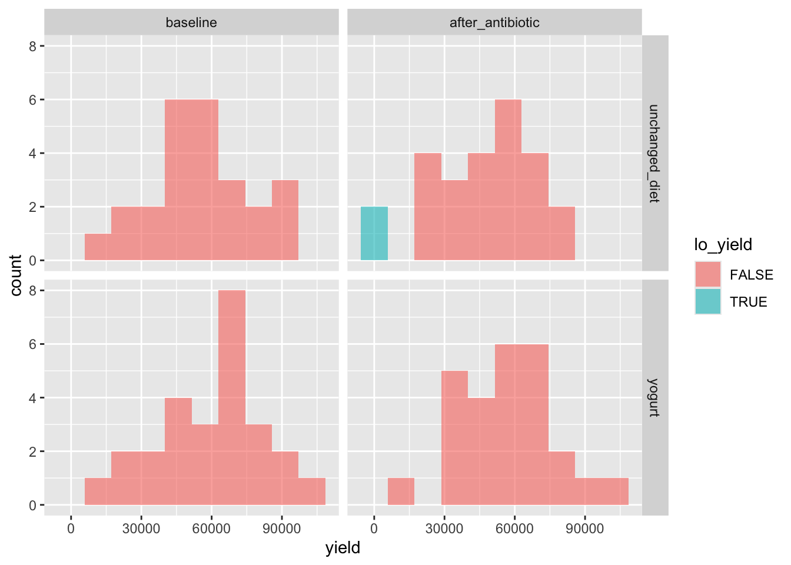
These look fine. Two low-yield samples are in the unchanged_diet arm, after abx.
Are there any ASVs we’d consider setting aside for now?
prev_df <- data.frame(
asv_sum = colSums(otu_table(yogurt_ps)),
asv_prev = colSums(otu_table(yogurt_ps) > 0)) %>%
rownames_to_column(var = "asv_seq")
asv_df <- tax_table(yogurt_ps) %>%
data.frame() %>%
rownames_to_column(var = "asv_seq") %>%
left_join(prev_df, by = "asv_seq") %>%
mutate(asv_len = nchar(asv_seq)) %>%
arrange(desc(asv_sum))
rm(prev_df)asv_df %>%
ggplot(aes(x = asv_len, y = asv_prev, color = Kingdom)) +
geom_point(alpha = 0.5, size = 3, stroke = FALSE) +
labs(title = "How prevalent are any length outliers?",
x = "ASV length",
y = "ASV prevalence") +
scale_y_log10()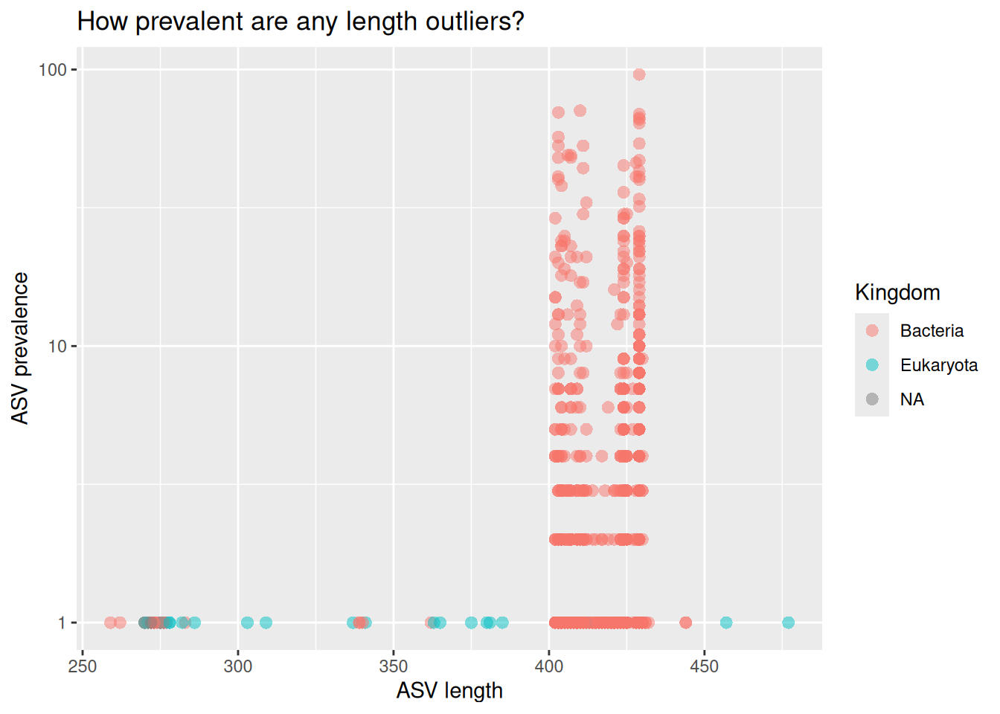
BLASTed a few of the Euk ASVs. Other than Trichomomas vaginalis, which was observed in one sample, they look like host contamination. Let’s keep ASVs that fit the following criteria:
keep <- asv_df %>%
filter(asv_len %in% 390:450) %>%
filter(Kingdom == "Bacteria") %>%
filter(!is.na(Phylum)) %>%
pull(asv_seq)
nrow(asv_df) - length(keep)[1] 71Setting aside 71 length outliers, or non-Bacteria, or Bacteria with Phylum NA.
yo_ps_clean <- yogurt_ps %>%
prune_taxa(keep, .) %>%
prune_samples(sample_sums(.) > 100, .) %>%
filter_taxa(., function(x) sum(x > 0) > 0, prune = TRUE) # Removes empty ASVs (if any exist)
yo_ps_cleanphyloseq-class experiment-level object
otu_table() OTU Table: [ 1517 taxa and 100 samples ]
sample_data() Sample Data: [ 100 samples by 34 sample variables ]
tax_table() Taxonomy Table: [ 1517 taxa by 7 taxonomic ranks ]We have two variables in our sample data that stand out (to me) as potential influencers of the vaginal microbiota - days_since_last_sex & birth_control. Are they well-balanced between arms; between timepoints?
Let’s check the variable days_since_last_sex
yogurt_sample_data %>%
ggplot(aes(x = days_since_last_sex, fill = arm)) +
geom_density(alpha = 0.5) +
facet_wrap(~time_point) +
theme(aspect.ratio = 1)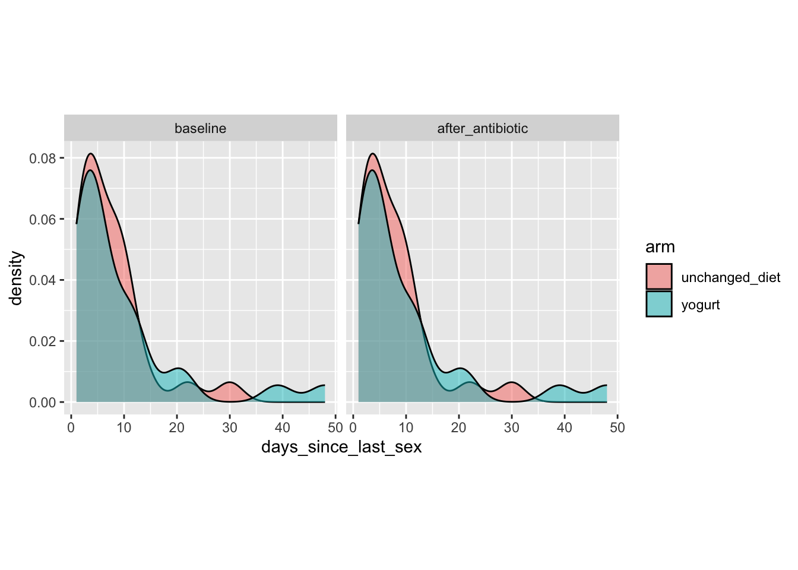
Note: We have the same value for baseline and after_antibiotic. Was days_since_last_sex assessed only at baseline? Will need to follow-up with team as to how the study was conducted. Were the participants asked to abstain from sex during the study? For now I will assume that days_since_last_sex is relative to the baseline timepoint.
yogurt_sample_data %>%
filter(time_point == "baseline") %>%
group_by(arm) %>%
get_summary_stats(days_since_last_sex, type = "five_number") %>% pander()| arm | variable | n | min | max | q1 | median | q3 |
|---|---|---|---|---|---|---|---|
| unchanged_diet | days_since_last_sex | 25 | 1 | 30 | 3 | 6 | 10 |
| yogurt | days_since_last_sex | 26 | 1 | 48 | 3 | 5 | 11 |
This variable, days_since_last_sex, seems reasonably well-balanced between arms.
Let’s check the variable birth_control
yogurt_sample_data %>%
filter(time_point == "after_antibiotic") %>%
count(arm, birth_control) %>% pander()| arm | birth_control | n |
|---|---|---|
| unchanged_diet | Depoprovera | 8 |
| unchanged_diet | no hormonal birth control | 17 |
| yogurt | Depoprovera | 17 |
| yogurt | no hormonal birth control | 9 |
Things are a bit unbalanced here. In the unchanged_diet arm, around 1/3 of participants use Depo, but in the yogurt arm around 2/3 of them do. We’ll keep this in mind as we perform our analysis. This variable could confound a simple comparison of unchanged_diet vs yogurt at timepoint after_antibiotic.
At the level of Genus, is there much difference in composition between participants using Depo vs Not using Depo?
yo_ps_clean %>%
ps_filter(time_point == "baseline") %>%
tax_fix() %>%
# tax_name(prefix = "asv", rank = "Genus") %>%
# tax_names2rank(colname = "Label") %>%
comp_barplot(tax_level = "Genus", n_taxa = 12) +
coord_flip() +
facet_wrap(.~birth_control, scales = "free_y")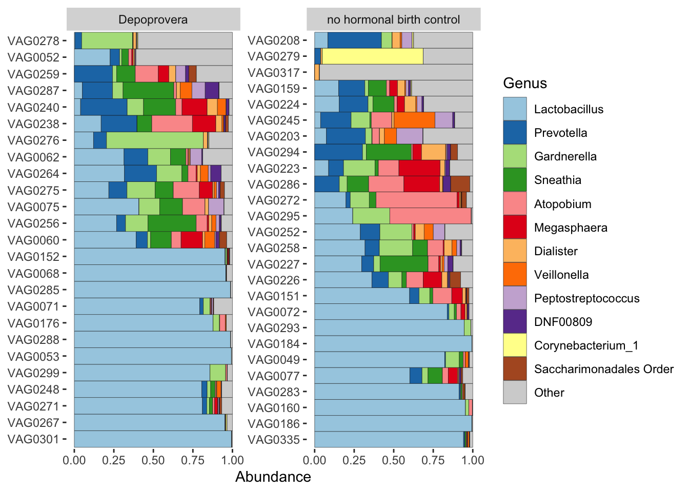
Nothing too dramatic, it seems. Nonetheless, we’ll try to compare participants to themselves.
Let’s glimpse the qPCR data.
yogurt_sample_data %>%
pivot_longer(qpcr_bacteria:qpcr_iners,
names_to = "qpcr_tax", values_to = "qpcr_value") %>%
arrange(pid, arm, time_point) %>%
ggplot(aes(x = time_point, y = qpcr_value+1)) +
geom_boxplot(alpha = 0.5, outlier.shape = NA) +
geom_line(aes(group = pid), alpha = 0.2) +
geom_point(alpha = 0.5, stroke = FALSE) +
facet_grid(cols = vars(qpcr_tax), rows = vars(arm), scales = "free") +
scale_y_log10() +
stat_compare_means(paired = TRUE)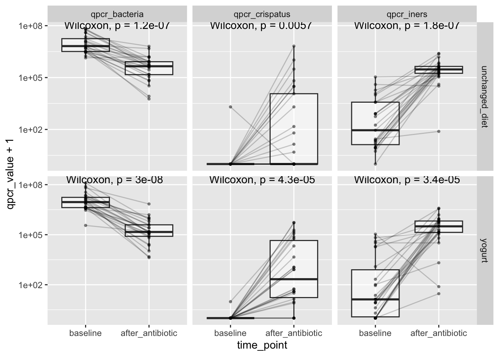
Post antibiotics, bacterial load is down; L. crispatus is up (from none to some; more sporadic); and L. iners is up (from some to lots; more consistent). Maybe L. crispatus up more (often) in yogurt than in no-yogurt?
Let’s fix L. crispatus as demonstrated in class
# How many ways do we see crispatus?
tax_table(yo_ps_clean) %>%
data.frame() %>%
filter(grepl("crispatus", Species)) %>%
pull(Species) %>% unique()[1] "crispatus"
[2] "acidophilus/casei/crispatus/gallinarum"
[3] "crispatus/gasseri/helveticus/johnsonii/kefiranofaciens"
[4] "animalis/apodemi/crispatus/murinus" # Make consistent
ps_yo_tax <- yo_ps_clean %>%
tax_fix() %>%
tax_mutate(Species = case_when(
Species == "acidophilus/casei/crispatus/gallinarum" ~ "crispatus",
Species == "crispatus/gasseri/helveticus/johnsonii/kefiranofaciens" ~ "crispatus",
Species == "animalis/apodemi/crispatus/murinus" ~ "crispatus",
.default = Species)) %>%
tax_mutate(Genus_species = str_c(Genus, Species, sep = " ")) %>%
tax_rename(rank = "Genus_species")# Plot bars Genus
ps_yo_tax %>%
tax_fix() %>%
tax_agg("Genus") %>%
ps_seriate() %>% # This changes the order of the samples to be sorted by similarity
comp_barplot(tax_level = "Genus", sample_order = "asis", n_taxa = 11) +
facet_wrap(arm ~ time_point, scales="free_x") +
theme(axis.text.x = element_text(size = 5, angle = 45, vjust = 1, hjust = 1))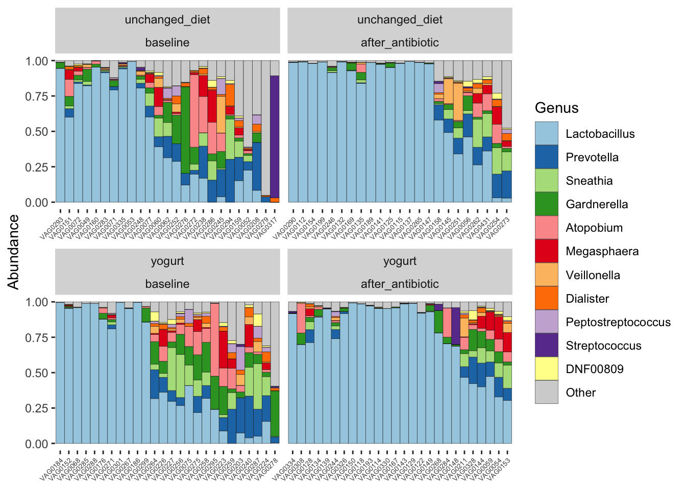
Looks like increase in prevalence of Lactobacillus dominance post antibiotic; little difference by diet
# Plot bars Genus_species
ps_yo_tax %>%
tax_fix() %>%
tax_agg("Genus_species") %>%
ps_seriate() %>% # This changes the order of the samples to be sorted by similarity
comp_barplot(tax_level = "Genus_species", sample_order = "asis", n_taxa = 11) +
facet_wrap(arm ~ time_point, scales="free_x") +
theme(axis.text.x = element_text(size = 5, angle = 45, vjust = 1, hjust = 1))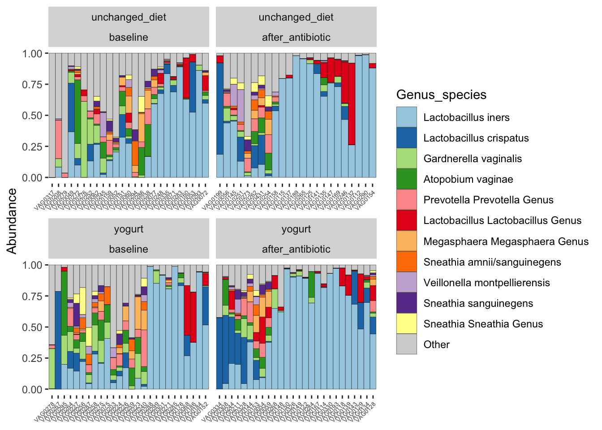
It would be worth spending some time to refine and make consistent all of the Lactobacillus species-level calls. In the past I’ve done this via clustering against a reference. Put it on the to-do list.
# Viz & test genus Lactobacillus
lacto_df <- yo_ps_clean %>%
transform_sample_counts(., function(x) x/sum(x)) %>%
tax_glom(., taxrank = "Genus") %>%
subset_taxa(., Genus == "Lactobacillus") %>%
otu_table() %>%
data.frame() %>%
rownames_to_column(var = "amplicon_sample_id")
colnames(lacto_df) <- c("amplicon_sample_id", "Lactobacillus")
lacto_df %>%
left_join(yogurt_sample_data, by = "amplicon_sample_id") %>%
group_by(pid) %>% filter(n() == 2) %>% ungroup() %>%
arrange(pid, arm, time_point) %>%
ggplot(aes(x = time_point, y = Lactobacillus)) +
geom_boxplot(alpha = 0.5, outlier.shape = NA) +
geom_line(aes(group = pid), alpha = 0.2) +
geom_point(alpha = 0.5, stroke = FALSE) +
facet_wrap(.~arm, scales = "free_y") +
theme(aspect.ratio = 1) +
stat_compare_means(paired = TRUE)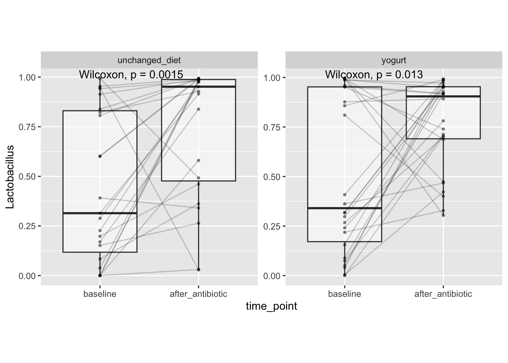
In both arms, the relative abundance of the genus Lactobacillus was significantly higher post antibiotics.
# Viz & test L. iners
lin_df <- yo_ps_clean %>%
transform_sample_counts(., function(x) x/sum(x)) %>%
tax_glom(., taxrank = "Species") %>%
subset_taxa(., Species == "iners") %>%
otu_table() %>%
data.frame() %>%
rownames_to_column(var = "amplicon_sample_id")
colnames(lin_df) <- c("amplicon_sample_id", "Lactobacillus_iners")
lin_df %>%
left_join(yogurt_sample_data, by = "amplicon_sample_id") %>%
group_by(pid) %>% filter(n() == 2) %>% ungroup() %>%
arrange(pid, arm, time_point) %>%
ggplot(aes(x = time_point, y = Lactobacillus_iners)) +
geom_boxplot(alpha = 0.5, outlier.shape = NA) +
geom_line(aes(group = pid), alpha = 0.2) +
geom_point(alpha = 0.5, stroke = FALSE) +
facet_wrap(.~arm, scales = "free_y") +
theme(aspect.ratio = 1) +
stat_compare_means(paired = TRUE)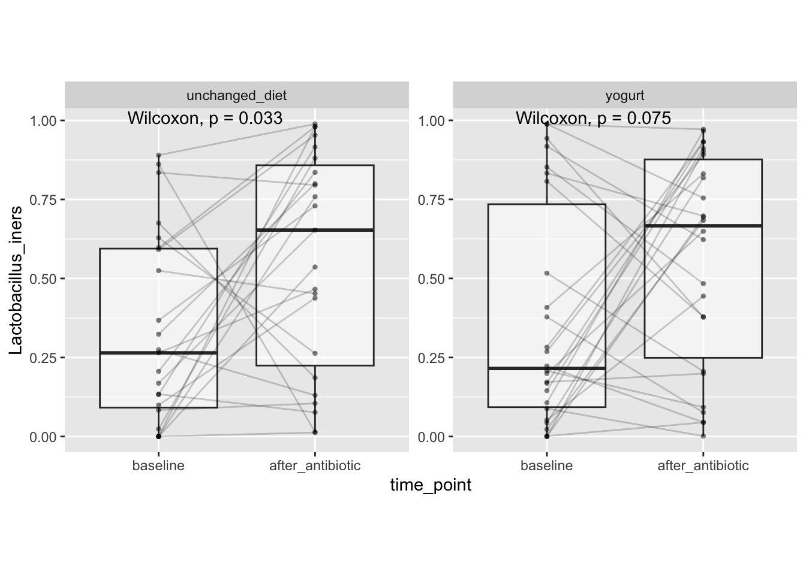
This seems largely driven by increases in Lactobacillus iners
# Viz & test L. crispatus
lcr_df <- yo_ps_clean %>%
transform_sample_counts(., function(x) x/sum(x)) %>%
tax_glom(., taxrank = "Species") %>%
subset_taxa(., grepl("crispatus", Species)) %>%
otu_table() %>%
data.frame() %>%
rownames_to_column(var = "amplicon_sample_id") %>%
rowwise() %>%
mutate(Lactobacillus_crispatus = sum(c_across(2:5))) %>%
select(amplicon_sample_id, Lactobacillus_crispatus)
lcr_df %>%
drop_na() %>%
left_join(yogurt_sample_data, by = "amplicon_sample_id") %>%
group_by(pid) %>% filter(n() == 2) %>% ungroup() %>%
arrange(pid, arm, time_point) %>%
ggplot(aes(x = time_point, y = Lactobacillus_crispatus)) +
geom_boxplot(alpha = 0.5, outlier.shape = NA) +
geom_line(aes(group = pid), alpha = 0.2) +
geom_point(alpha = 0.5, stroke = FALSE) +
facet_wrap(.~arm, scales = "free_y") +
theme(aspect.ratio = 1) +
stat_compare_means(paired = TRUE)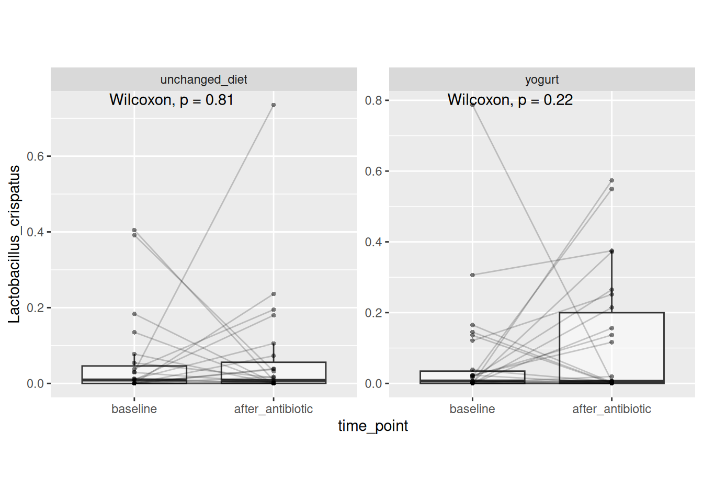
And less so by increases in Lactobacillus crispatus
Identify cytokines with most measurements within limits
yogurt_sample_data %>%
select(starts_with("limits")) %>%
summarise(across(starts_with("limits"), ~ sum(.x == "within limits", na.rm = TRUE))) %>%
t() %>% data.frame() %>%
rownames_to_column(var = "cytokine") %>%
rename(samples_within_limits = ".") %>%
arrange(desc(samples_within_limits)) %>% pander()| cytokine | samples_within_limits |
|---|---|
| limits_IL-1a | 102 |
| limits_IP-10 | 99 |
| limits_IL-8 | 98 |
| limits_MIG | 89 |
| limits_MIP-3a | 78 |
| limits_IL-1b | 28 |
| limits_IL-6 | 25 |
| limits_TNFa | 2 |
| limits_IFN-Y | 1 |
| limits_IL-10 | 0 |
Let’s go with these; at least 75% of measurements were “within the limits” of detection
kines <- paste0("conc_", c("IL-1a", "IP-10", "IL-8", "MIG", "MIP-3a"))yogurt_sample_data %>%
pivot_longer(all_of(kines), names_to = "kine", values_to = "conc") %>%
ggplot(aes(x = conc, fill = time_point)) +
geom_histogram(bins = 30) +
facet_wrap(~kine) +
scale_x_log10()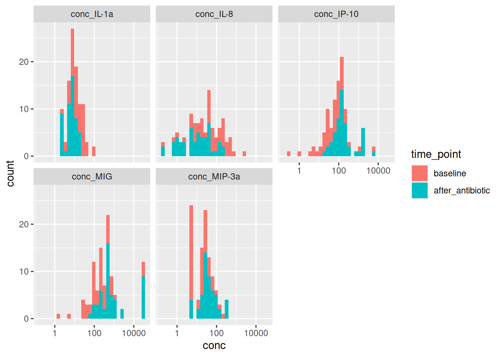
Noticing a subtle shift with abx: Down for IL-1a and IL-8; up for IP-10 and MIG
# Any singletons?
sum(otu_table(yo_ps_clean) == 1)[1] 3Owing to very few singletons, we’ll exclude Chao1 and ACE
Calculate measures & add sample data
measures <- c("Shannon", "Simpson", "InvSimpson", "Fisher")
alpha_df <- yo_ps_clean %>%
estimate_richness(measures = measures) %>%
rownames_to_column(var = "amplicon_sample_id") %>%
left_join(yogurt_sample_data, by = "amplicon_sample_id")
alpha_df %>%
select(1:9) %>%
head(n = 3) %>% pander()| amplicon_sample_id | Shannon | Simpson | InvSimpson | Fisher | amplicon_type |
|---|---|---|---|---|---|
| VAG0049 | 1.738 | 0.7194 | 3.564 | 5.664 | vaginal |
| VAG0052 | 2.889 | 0.9084 | 10.92 | 7.494 | vaginal |
| VAG0053 | 1.013 | 0.5593 | 2.269 | 1.637 | vaginal |
| pid | arm | time_point |
|---|---|---|
| pid_24 | unchanged_diet | baseline |
| pid_36 | unchanged_diet | baseline |
| pid_02 | unchanged_diet | baseline |
How many complete cases?
alpha_df %>%
group_by(pid) %>% filter(n() == 2) %>% ungroup() %>%
count(time_point)# A tibble: 2 × 2
time_point n
<fct> <int>
1 baseline 49
2 after_antibiotic 49Plot and test for antibiotic-associated change
alpha_df %>%
group_by(pid) %>% filter(n() == 2) %>% ungroup() %>%
arrange(pid, time_point) %>%
pivot_longer(cols = all_of(measures),
names_to = "adiv_measure",
values_to = "adiv_value") %>%
ggplot(aes(x = time_point, y = adiv_value)) +
geom_boxplot(alpha = 0.5, outlier.shape = NA) +
geom_line(aes(group = pid), alpha = 0.2) +
geom_point(alpha = 0.5, stroke = FALSE) +
facet_wrap(.~adiv_measure, scales = "free_y") +
theme(aspect.ratio = 1) +
stat_compare_means(paired = TRUE)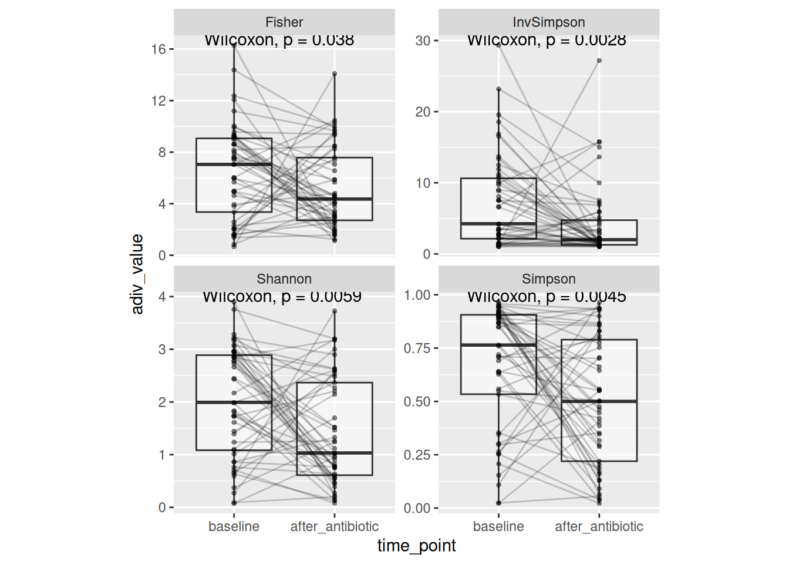
Result: Antibiotic treatment was associated with a modest decrease in vaginal bacterial diversity (Shannon diversity index, Wilcoxon signed rank test, n = 49 participants, P = 0.006). This result was robust to choice of alpha diversity metric (Supplemental Figure 1).
How many complete cases per arm?
alpha_df %>%
group_by(pid) %>% filter(n() == 2) %>% ungroup() %>%
count(arm, time_point) %>% pander()| arm | time_point | n |
|---|---|---|
| unchanged_diet | baseline | 23 |
| unchanged_diet | after_antibiotic | 23 |
| yogurt | baseline | 26 |
| yogurt | after_antibiotic | 26 |
Plot and test for yogurt modulation of antibiotic-associated change
alpha_df %>%
group_by(pid) %>% filter(n() == 2) %>% ungroup() %>%
pivot_longer(all_of(measures), names_to="metric", values_to="value") %>%
select(pid, time_point, arm, metric, value) %>%
pivot_wider(names_from = time_point, values_from = value) %>%
mutate(diff_alpha = after_antibiotic - baseline) %>%
ggplot(aes(x = arm, y = diff_alpha)) +
geom_boxplot(alpha = 0.4, outlier.shape = NA) +
geom_quasirandom(stroke = FALSE, width = 0.2) +
facet_wrap(.~metric, scales = "free_y") +
theme(aspect.ratio = 1) +
stat_compare_means(paired = FALSE)
Result: Antibiotic-associated changes in vaginal bacterial diversity were similar between participants who consumed yogurt and those who did not (change in Shannon diversity index, Wilcoxon rank sum test, N = 26 yogurt consumers vs 23 with unchanged diet, P = 0.82). This result was robust to choice of alpha diversity metric (Supplemental Figure 2).
Let’s ordinate using some microViz recipes
# Using robust.aitchison distance, MDS (PCoA) ordination, and displaying side panel boxplots
set.seed(123)
ps_yo_tax %>%
tax_fix() %>%
tax_transform("identity", rank = "Genus") %>%
dist_calc(dist = "robust.aitchison") %>%
ord_calc("PCoA") %>%
ord_plot(color = "time_point", shape = "arm", size = 2) +
scale_colour_brewer(palette = "Dark2", aesthetics = c("fill", "colour")) +
theme_bw() +
ggside::geom_xsideboxplot(aes(fill = time_point, y = time_point), orientation = "y") +
ggside::geom_ysideboxplot(aes(fill = time_point, x = time_point), orientation = "x") +
ggside::scale_xsidey_discrete(labels = NULL) +
ggside::scale_ysidex_discrete(labels = NULL) +
ggside::theme_ggside_void()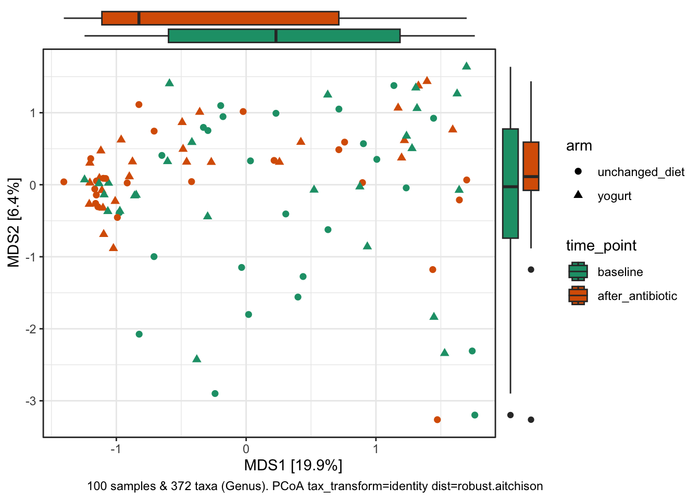
# Using bray-curtis distance, MDS (PCoA) ordination, and displaying side panel density plots
set.seed(123)
ps_yo_tax %>%
tax_fix() %>%
tax_transform("identity", rank = "Genus") %>%
dist_calc(dist = "bray") %>%
ord_calc("PCoA") %>%
ord_plot(color = "time_point", shape = "arm", size = 2) +
scale_colour_brewer(palette = "Dark2", aesthetics = c("fill", "colour")) +
theme_bw() +
ggside::geom_xsidedensity(aes(fill = time_point), alpha = 0.5, show.legend = FALSE) +
ggside::geom_ysidedensity(aes(fill = time_point), alpha = 0.5, show.legend = FALSE) +
ggside::theme_ggside_void()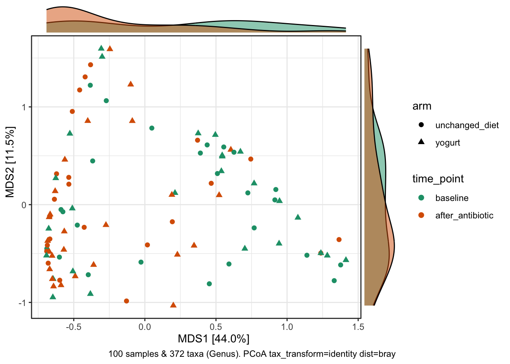
Along axis 1, there’s a subtle shift (in the density of samples) associated with antibiotic treatment, with more “after” samples clustering on left.
Now let’s answer our question about whether diet (yogurt) modulates response of vaginal microbiota to antibiotics.
Get a distance for each person’s pair of samples; we’ll ask: are distances different for those who ate yogurt vs those who didn’t?
# Pick some distance metrics
distances <- c("bray", "canberra", "euclidean", "hellinger", "kulczynski", "manhattan", "morisita", "robust.aitchison")
# Get counts
yo_tab <- yo_ps_clean %>% otu_table()
# Prepare sample data
sam1 <- yogurt_sample_data %>% select(amplicon_sample_id, pid, arm) %>%
dplyr::rename(sam1 = amplicon_sample_id, pid1 = pid, arm1 = arm)
sam2 <- yogurt_sample_data %>% select(amplicon_sample_id, pid, arm) %>%
dplyr::rename(sam2 = amplicon_sample_id, pid2 = pid, arm2 = arm)# Get distances
result <- vector("list")
for (d in distances) {
# Get distance matrix
# This contains a distance for every pair of samples
dist <- vegdist(x = yo_tab, method = d)
# Convert to regular matrix
d_mat <- as(dist, "matrix")
# Replace upper tri and diag w/ NA
d_mat[upper.tri(d_mat, diag = TRUE)] <- NA
# Melt to columns and drop NA
d_col <- setNames(melt(d_mat, as.is = TRUE), c("sam1", "sam2", "dist")) %>%
drop_na() %>% mutate(metric = d)
# Add sample data
d_col <- left_join(d_col, sam1, by = "sam1") %>% left_join(sam2, by = "sam2")
# Filter to same-participant distances
# This contains a distance for only those pairs we're interested in
# For each person, the distance between their pre- and post-abx
d_wi <- d_col %>% filter(pid1 == pid2)
result[[d]] <- d_wi
}# Plot and test
bind_rows(result) %>%
ggplot(aes(x = arm1, y = dist)) +
geom_boxplot(alpha = 0.4, outlier.shape = NA) +
geom_quasirandom(stroke = FALSE, width = 0.2) +
facet_wrap(.~metric, nrow = 2, scales = "free_y") +
stat_compare_means(paired = FALSE) +
labs(x = "", y = "Distance between pre-abx and post-abx sample")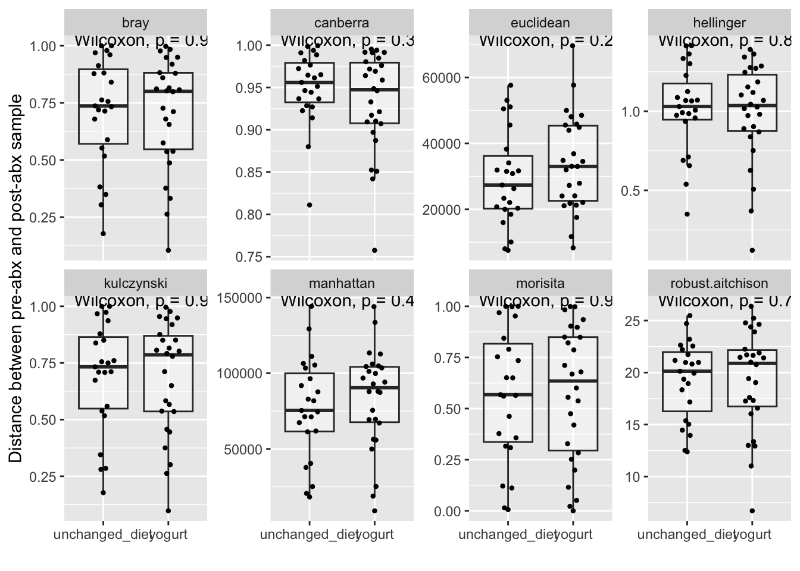
Result: Turnover in bacterial community composition was similar between antibiotic-treated participants who consumed yogurt and those who did not (Bray-Curtis distance, Wilcoxon rank sum test, N = 26 yogurt consumers vs 23 with unchanged diet, P = 0.9). This result was robust to choice of distance metric (Supplemental Figure 3).
Let’s explore this microViz recipe for redundancy analysis (RDA).
RDA is a constrained ordination method. “Constrained” means that the ordination (in this case, PCA) only shows the community variation that can be explained by/associated with the external environmental/clinical variables (these are called the “constraints”).
First let’s constrain by time_point and arm
yo_ps_clean %>%
ps_mutate(
after_abx = as.numeric(time_point == "after_antibiotic"),
yogurt = as.numeric(arm == "yogurt")
) %>%
tax_fix() %>%
tax_transform("clr", rank = "Genus") %>%
ord_calc(
constraints = c("after_abx", "yogurt"),
method = "RDA",
scale_cc = FALSE
) %>%
ord_plot(
colour = "time_point", size = 2, alpha = 0.5, shape = "arm",
plot_taxa = 1:10
)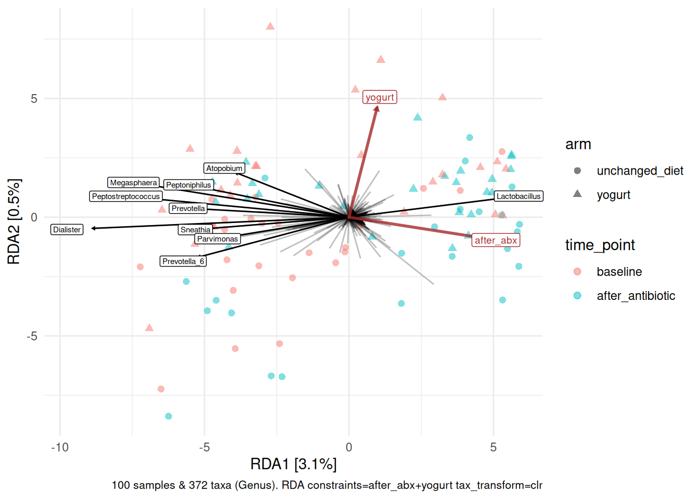
Good, makes sense given other findings. Look at the axes - how much variation explained? Less than in our unconstrained analyses shown above. So we might say that the variation associated with antibiotic exposure is just a (small?) part of the total variation observed among samples.
Now let’s examine birth control and recent sex
yo_ps_clean %>%
ps_mutate(
depo = as.numeric(birth_control == "Depoprovera"),
recent_sex = as.numeric(days_since_last_sex < 7)
) %>%
tax_fix() %>%
tax_transform("clr", rank = "Genus") %>%
ord_calc(
constraints = c("depo", "recent_sex"),
method = "RDA",
scale_cc = FALSE
) %>%
ord_plot(
colour = "time_point", size = 2, alpha = 0.5, shape = "arm",
plot_taxa = 1:10
)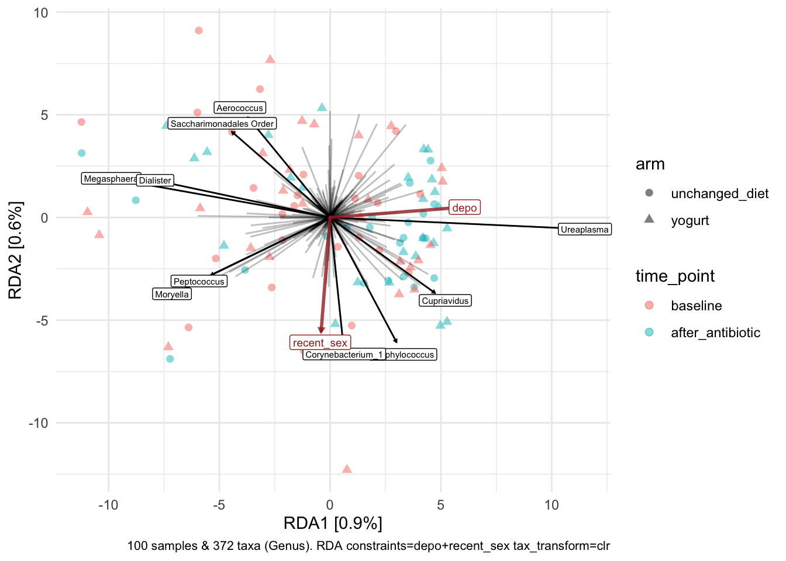
Maybe not a lot of signal here.
Let’s try with cytokines as constraints
yo_ps_clean %>%
# ps_mutate(
# conc_IL.1a = log10(conc_IL.1a),
# conc_IP.10 = log10(conc_IP.10),
# conc_IL.8 = log10(conc_IL.8),
# conc_MIG = log10(conc_MIG)
# ) %>%
tax_fix() %>%
tax_transform("clr", rank = "Genus") %>%
ord_calc(
constraints = c("conc_IL.1a", "conc_IP.10", "conc_IL.8", "conc_MIG"),
method = "RDA",
scale_cc = FALSE
) %>%
ord_plot(
colour = "time_point", size = 2, alpha = 0.5, shape = "arm",
plot_taxa = 1:12
)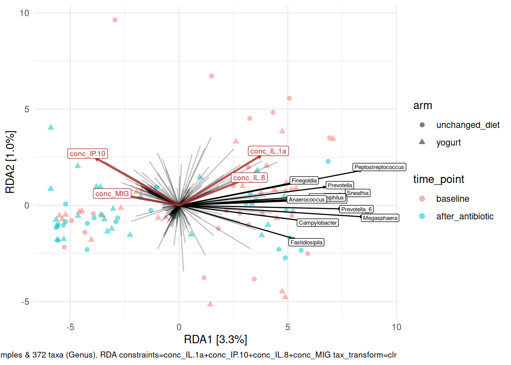
Interesting, IL-1a and IL-8 associated with diverse anaerobes.
Finally, let’s look at antibiotic, IL-1a, IP-10 & IL-8
yo_ps_clean %>%
ps_mutate(
after_abx = as.numeric(time_point == "after_antibiotic"),
) %>%
tax_fix() %>%
tax_transform("clr", rank = "Genus") %>%
ord_calc(
constraints = c("after_abx", "conc_IL.1a", "conc_IP.10", "conc_IL.8"),
method = "RDA",
scale_cc = FALSE
) %>%
ord_plot(
colour = "time_point", size = 2, alpha = 0.5, shape = "arm",
plot_taxa = 1:15
)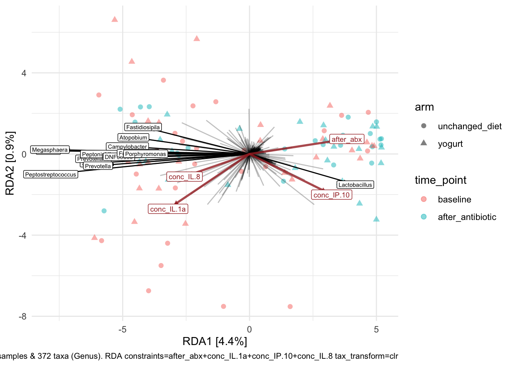
So we’re beginning to build a sense of how vaginal microbiota, vaginal cytokines, and antibiotic treatment relate to each other. We might suggest that antibiotic treatment was associated with an increase in the prevalence of Lactobacillus dominance, possibly accompanied by a reduction (or shift) in the levels (or type) of inflammation.
That’s it for now! 🤓
Correlation heatmaps in microViz
ps_manual_taxonomy <- yo_ps_clean %>%
tax_fix() %>%
tax_mutate(Species = case_when(
Species == "acidophilus/casei/crispatus/gallinarum" ~ "crispatus",
Species == "crispatus/gasseri/helveticus/johnsonii/kefiranofaciens" ~ "crispatus",
Species == "animalis/apodemi/crispatus/murinus" ~ "crispatus",
.default = Species)) %>%
#also remake genus_species to fix those taxa
tax_mutate(genus_species = str_c(Genus, Species, sep = " ")) %>%
tax_rename(rank = "genus_species")yo_ps_clean %>%
tax_filter(min_prevalence = 3, min_total_abundance = 3) %>%
tax_fix() %>%
tax_agg("Phylum") %>%
cor_heatmap(taxa = tax_top(yo_ps_clean, 8, by = max, rank = "Phylum"),
vars = c("conc_IL.1a", "conc_IP.10", "conc_IL.8", "conc_MIG", "conc_MIP.3a"),
cor = "spearman")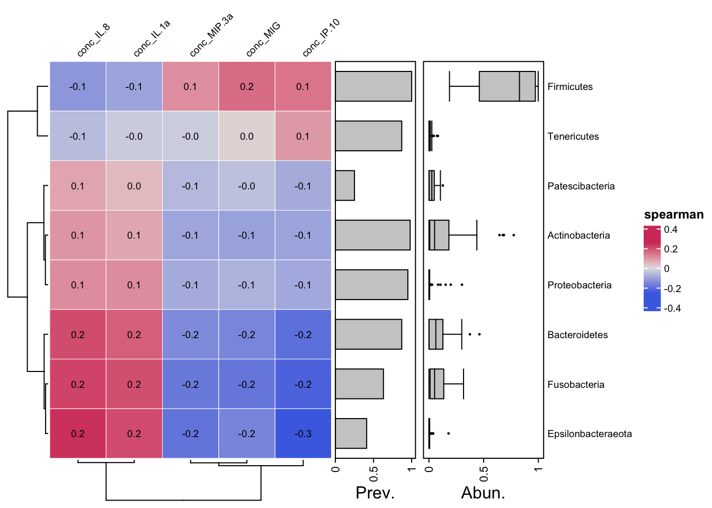
library("ComplexHeatmap")Loading required package: grid========================================
ComplexHeatmap version 2.18.0
Bioconductor page: http://bioconductor.org/packages/ComplexHeatmap/
Github page: https://github.com/jokergoo/ComplexHeatmap
Documentation: http://jokergoo.github.io/ComplexHeatmap-reference
If you use it in published research, please cite either one:
- Gu, Z. Complex Heatmap Visualization. iMeta 2022.
- Gu, Z. Complex heatmaps reveal patterns and correlations in multidimensional
genomic data. Bioinformatics 2016.
The new InteractiveComplexHeatmap package can directly export static
complex heatmaps into an interactive Shiny app with zero effort. Have a try!
This message can be suppressed by:
suppressPackageStartupMessages(library(ComplexHeatmap))
========================================# data("ibd", package = "microViz")
psq <- tax_filter(yo_ps_clean, min_prevalence = 5)
psq <- tax_mutate(psq, Species = NULL)
psq <- tax_fix(psq)
psq <- tax_agg(psq, rank = "Phylum")
taxa <- tax_top(psq, n = 15, rank = "Phylum")
samples <- phyloseq::sample_names(psq)
set.seed(42) # random colours used in first example
# sampleAnnotation returns a function that takes data, samples, and which
fun <- sampleAnnotation(
gap = grid::unit(2.5, "mm"),
Time = anno_sample_cat(var = "time_point", col = 1:2),
Arm = anno_sample_cat(var = "arm", col = 3:4),
Bc = anno_sample_cat(var = "birth_control", col = 5:6)
)
# manually specify the sample annotation function by giving it data etc.
heatmapAnnoFunction <- fun(.data = psq, .side = "top", .samples = samples)Warning in (function (x, which, renamer = identity, col = distinct_palette(), :
coercing non-character anno_cat annotation data to character# draw the annotation without a heatmap, you will never normally do this!
grid.newpage()
vp <- viewport(width = 0.65, height = 0.75)
pushViewport(vp)
draw(heatmapAnnoFunction)
pushViewport(viewport(x = 0.7, y = 0.6))
draw(attr(heatmapAnnoFunction, "Legends"))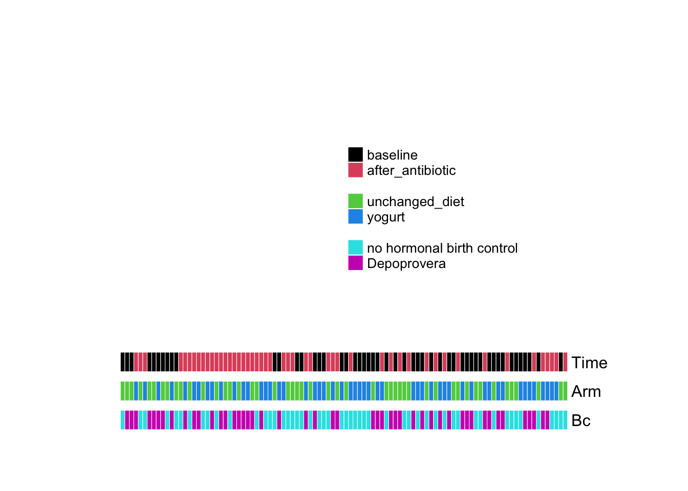
yo_ps_clean %>%
ps_arrange(time_point) %>%
tax_transform("compositional", rank = "Phylum") %>%
comp_heatmap(
tax_anno = taxAnnotation(
Prev. = anno_tax_prev(bar_width = 0.3, size = grid::unit(1, "cm"))),
sample_anno = fun, sample_seriation = "Identity")Warning in (function (x, which, renamer = identity, col = distinct_palette(), :
coercing non-character anno_cat annotation data to character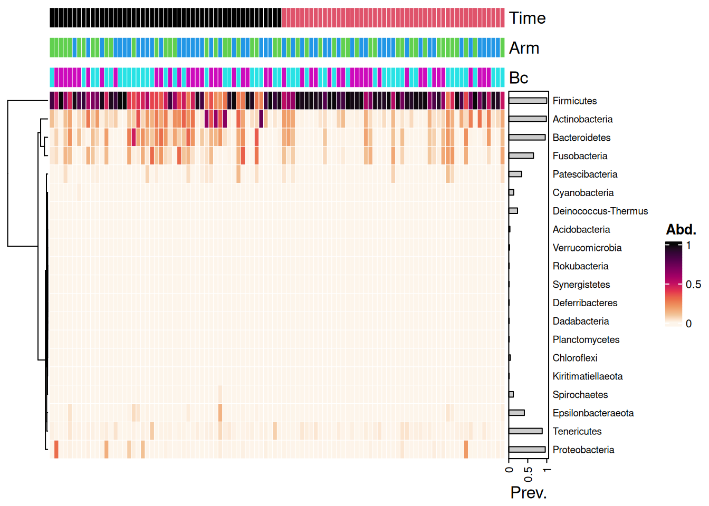